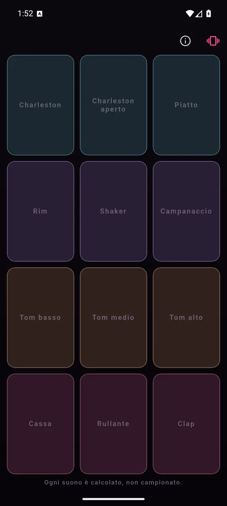
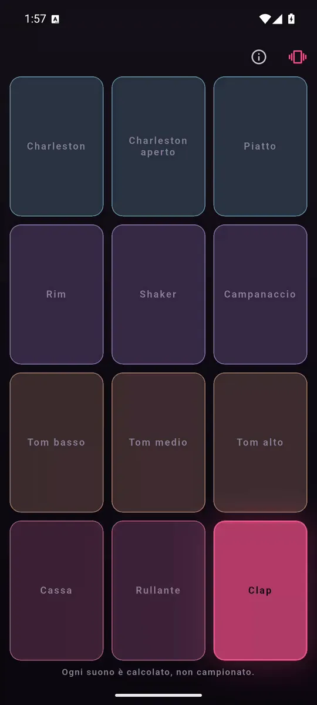
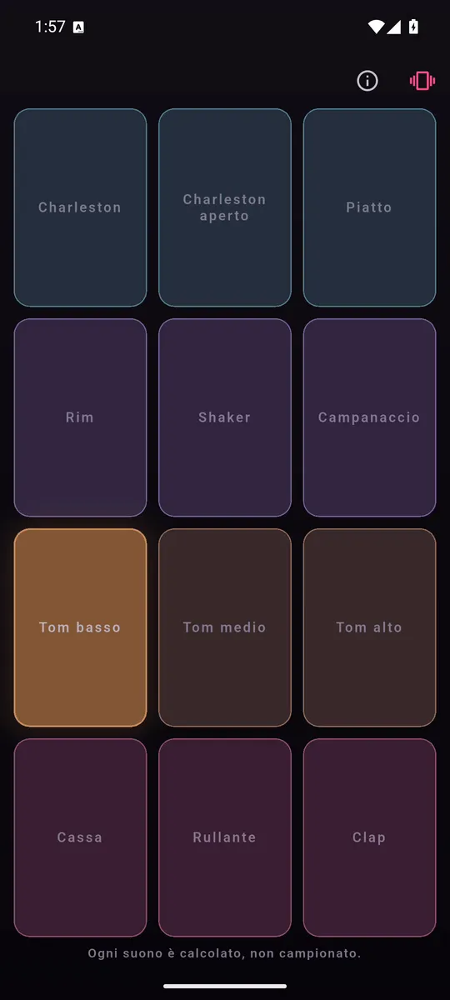

ItalianoEnglish
Cassa, rullante, rim, clap, tre tom, charleston chiuso e aperto, shaker, campanaccio e piatto. Disposti come su una drum machine — pesanti e bassi in fondo, brillanti e corti in alto — perché è la disposizione che le mani già conoscono.

Cassa, rullante, tom, piatti e percussioni, tutti sotto il pollice. 
Il pad si accende sotto il dito, e il suono parte con lui. 
Ogni suono è calcolato mentre lo suoni: nessun file, nessun download.
Cosa fa
- Il pad suona quando il dito scende, non quando si alza. Un pad che aspetta è un pad in ritardo, e il ritardo è l'unica cosa che una drum machine non può permettersi.
- Ogni pad ha il colore della sua famiglia, anche da spento: la griglia si legge prima di essere suonata.
- Ogni colpo accende il pad e fa vibrare il telefono sotto il suono.
- Si può ribattere lo stesso pad: due colpi ravvicinati suonano due volte, invece di troncare il primo.
- In italiano e in inglese, secondo la lingua del telefono.
Nessun campione: i suoni sono aritmetica
Tutti e dodici i suoni sono calcolati, non registrati: una sinusoide che cala di tono per la cassa, rumore filtrato per il charleston, tre schiocchi sfalsati per il clap, partiali inarmonici per il piatto. Il kit intero pesa qualche centinaio di kilobyte di aritmetica invece di un pacco di file audio, non c'è niente da scaricare al primo avvio, e non c'è nessuna licenza da inseguire dietro a nessun suono.
I tuoi dati restano tuoi
Pads non ascolta: nessun microfono, nessun account, nessun server nostro. I permessi si fermano a Internet, che serve agli annunci, e alla vibrazione che accompagna il colpo.
Come si paga
Con un banner ancorato in fondo, e basta: nessun annuncio fra un colpo e l'altro, nessun abbonamento, nessun pad tenuto in ostaggio.
Dove trovarla
Non è ancora su Google Play. Quando ci sarà, il collegamento comparirà qui.